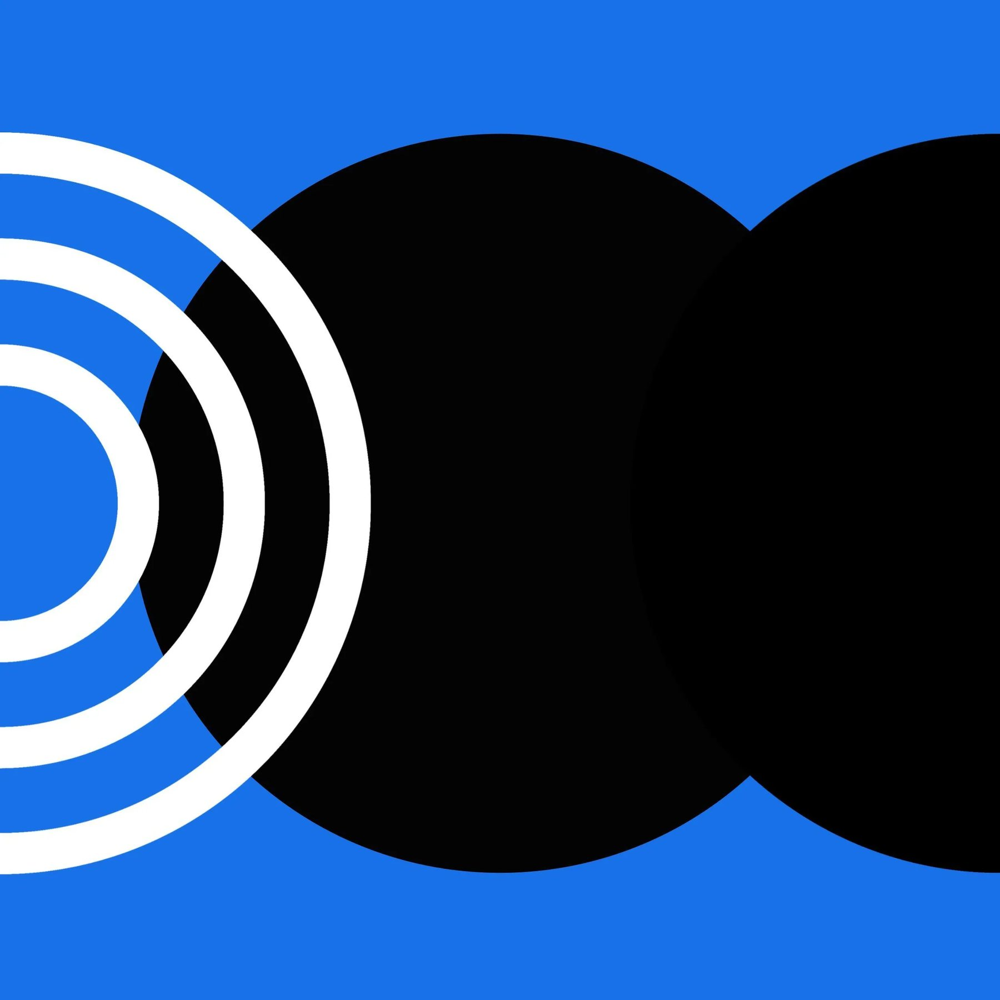

Occasional insights.
No spam, just the good stuff.
On AI-enabled design, leadership, and organizational transformation. The stuff I'd send a smart friend.
Perspective

While direct engagement with users is always the gold standard for research, there are times when speaking with real people isn't possible. In these situations, Synthetic Users offers a powerful AI-driven solution for both industry and academic research.
Synthetic Users is an advanced research platform that uses AI and natural language processing to generate synthetic user types that mimic real human behavior. Each synthetic user is underpinned by its own Five Factor Model (FFM) personality model, enabling realistic interactions through four distinct types of interviews.
In business environments, Synthetic Users can transform how teams approach user research and product development. Product teams can leverage the platform to understand accessibility needs early in development, while designers can test usability assumptions. And emerging researchers can practice sensitive interview approaches, helping teams develop genuine empathy before engaging with real users.
In academic settings, students can also use Synthetic Users to practice interview techniques without risking harm to vulnerable participants, helping develop inclusive approaches while building skills for handling sensitive topics.
Over the past year, I've had the opportunity to introduce Synthetic Users into research methods in my teaching. The platform has enabled my students to explore sensitive research topics while developing their interviewing skills in a safe environment. Here are three examples that demonstrate how my students have used Synthetic Users to tackle complex research challenges.
Many of my students using Synthetic Users gained meaningful insights into both offline and online challenges faced by users with disabilities. Conversations revealed perspectives about adaptive devices, interface preferences, and creative workarounds, going beyond standard accessibility guidelines.
One student conducting parallel research streams, real-life interviews with caregivers and Synthetic Users interviews, found that the product's insights aligned remarkably closely with themes from real-world interviews. This demonstrated how the platform can provide reliable insights when direct access is limited.
Another student explored experiences of youth in underserved communities, focusing on after-school activities and home life. Through the platform, she gathered valuable perspectives about daily routines and family dynamics while maintaining appropriate research boundaries.
When conducting research with sensitive populations, we must balance our need to gather insights with ethical considerations and access limitations. Synthetic Users offers a middle ground where researchers can gain understanding while protecting vulnerable populations.
As products and services need to serve increasingly diverse users, synthetic users offer a valuable tool for understanding perspectives we might otherwise miss. They help bridge the gap between assumption and understanding, whether in education or practice.
On AI-enabled design, leadership, and organizational transformation. The stuff I'd send a smart friend.